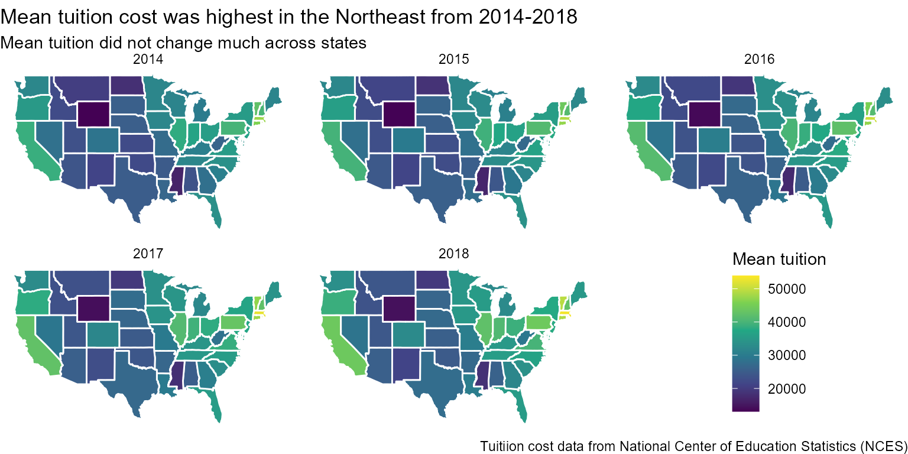
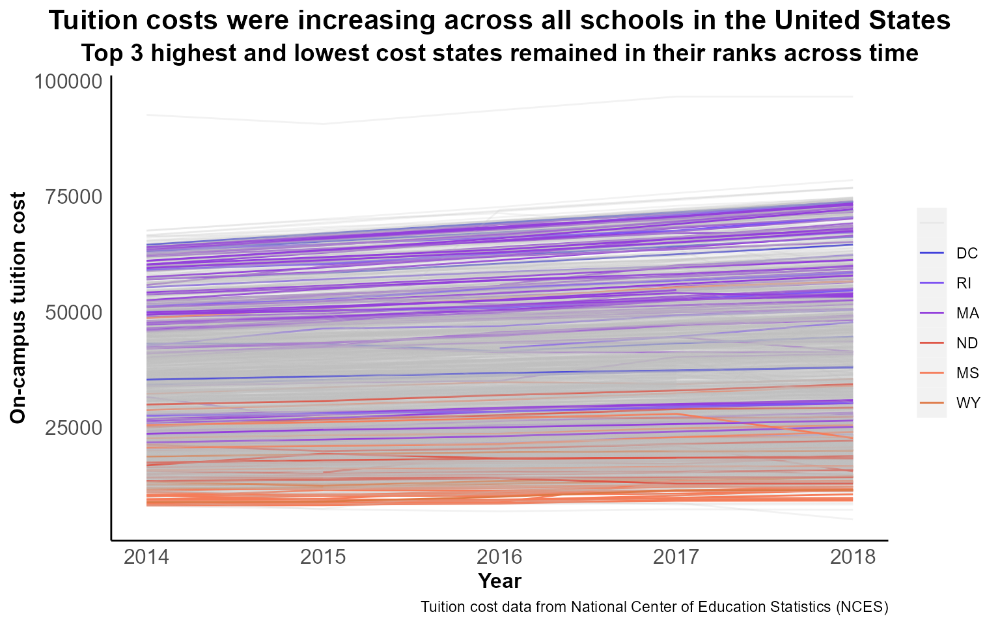
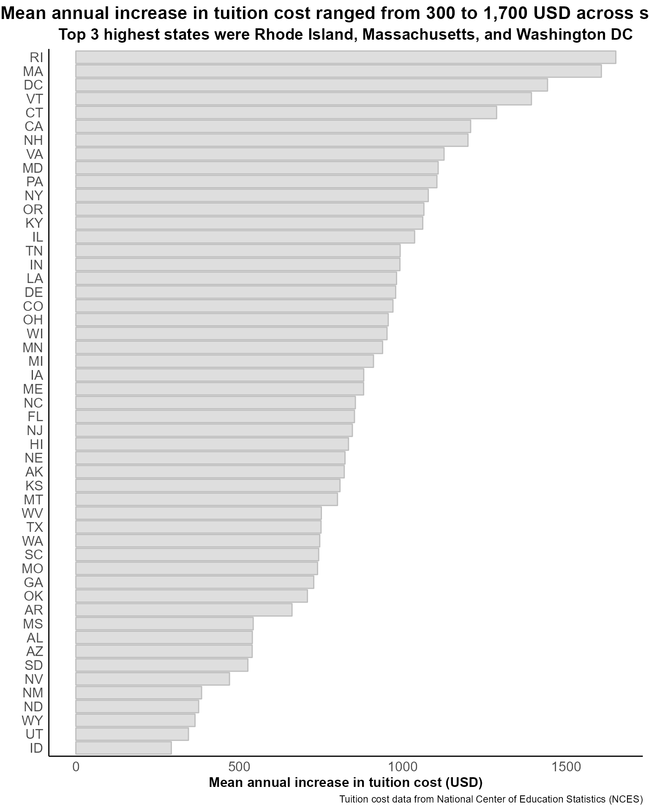

Example Analysis
lme-example.RmdIn this vignette, we demonstrate how to conduct a linear mixed model
using the nlme package.
Here, we use data featured in TidyTuesday Podcast Episode 16: College
Tuition](https://www.tidytuesday.com/16). This is a longitudinal
data set of tuition fees from the National Center of Education
Statistics (NCES). Instructions for downloading the data, as well as the
data dictionary are available here.
We will use the tuition_income.csv file.
We will aim to answer the question: What is the mean change in on-campus tuition prices from 2014 to 2018 across U.S. universities? We will also answer two sub-questions: (1) What is the mean on-campus tuition price every year from 2014 to 2018 per state, and (2) What is the mean five-year change in on-campus tuition price for every state?
We first read the data in:
# Store the name of the csv on TidyTuesday github
tuition_income_url <- "tuition_income.csv"
# Test if a directory named data exists locally (will create if it doesn't exist)
ifelse(!dir.exists("data"), dir.create("data"),
"Directory is already created")
#> [1] "Directory is already created"
# Read the data only once
tuition_income_path <- "data/tuition_income.Rdata"
if (!file.exists(tuition_income_path)) {
tuition_income <-
paste0("https://raw.githubusercontent.com/rfordatascience/tidytuesday/master/data/2020/2020-03-10/", tuition_income_url) |>
readr::read_csv() |>
janitor::clean_names()
save(tuition_income, file = tuition_income_path)
} else {
load(tuition_income_path)
}We first subset our dataset to retrieve only data for the years from 2014 to 2016 and on campus tuition prices. Since the data set is further stratified by the net price by income bracket, we retrieve only the first observation within each school.
# Filter data from 2014 to 2018 and only on-campus tuition
tuition_income_1418_oc <- tuition_income |>
dplyr::filter(year %in% c(2014:2018) & campus == "On Campus") |>
dplyr::group_by(name, year) |>
dplyr::filter(dplyr::row_number() == 1L) |>
dplyr::ungroup() |>
dplyr::select(name, state, total_price, year)
tuition_income_1418_oc
#> # A tibble: 9,743 × 4
#> name state total_price year
#> <chr> <chr> <dbl> <dbl>
#> 1 Piedmont International University NC 20174 2016
#> 2 Piedmont International University NC 20514 2017
#> 3 Piedmont International University NC 20829 2018
#> 4 Yeshiva Gedolah Shaarei Shmuel NJ 14010 2016
#> 5 Yeshiva Gedolah Shaarei Shmuel NJ 14010 2017
#> 6 Yeshiva Gedolah Shaarei Shmuel NJ 14900 2018
#> 7 Beth Medrash of Asbury Park NJ 16300 2016
#> 8 Beth Medrash of Asbury Park NJ 16300 2017
#> 9 Beth Medrash of Asbury Park NJ 18940 2018
#> 10 Elim Bible Institute and College NY 14268 2016
#> # … with 9,733 more rowsWe answer the first question: What is the mean on-campus tuition price every year from 2014 to 2018 per state?
# Create a data set per year
tuition_income_1418_oc_byyear <- tuition_income_1418_oc |>
split(tuition_income_1418_oc$year)
# Create a function that calculates the mean tuition by state and stores in a data frame
meantuition_state <- function(x) {
# x: index of list in tuition_income_1418_oc_byyear
means <- tuition_income_1418_oc_byyear[[x]] |>
split(tuition_income_1418_oc_byyear[[x]]$state) |>
purrr::map_dfr(.f = ~mean(.x$total_price)) |>
t()
data.frame(state = rownames(means),
meantuition = means[,1],
year = names(tuition_income_1418_oc_byyear[x]))
}
# Apply the function to each year and store in one data frame
meantuition_yearstate <- purrr::map_dfr(1:5, .f = meantuition_state)We then present the results in a choropleth map, by year:
# Match the state abbreviation with the state name
meantuition_yearstate <- meantuition_yearstate |>
dplyr::mutate(region = tolower(state.name[match(state, state.abb)]))
# Retrieve the states map data and merge with mean tuition data
states_map <- ggplot2::map_data("state")
meantuition_yearstate_map <- dplyr::left_join(states_map, meantuition_yearstate, by = "region") |>
dplyr::filter(!is.na(year))
# Create the choropleth map
ggplot(meantuition_yearstate_map, aes(long, lat, group = group)) +
geom_polygon(aes(fill = meantuition), color = "white") +
scale_fill_viridis_c() +
facet_wrap(~year, ncol = 3) +
labs(fill = "Mean tuition",
title = "Mean tuition cost was highest in the Northeast from 2014-2018",
subtitle = "Mean tuition did not change much across states",
caption = "Tuitiion cost data from National Center of Education Statistics (NCES)") +
theme_void() +
theme(legend.position = c(0.9,0.1), legend.justification = c(0.9,0.1)) We see that the highest tuition costs were in the Northeast: Washington DC, Rhode Island, and Massachusetts had average four-year college tuition costs at more than 50,000 USD a year. On the other hand, Wyoming, Mississippi, and North Dakota had the lowest tuition costs at less than 15,000 USD a year.
We then answer the second question: What is the mean five-year change in on-campus tuition price for every state?
First, we visualize the tuition cost every year for each school using a spaghetti plot, highlighting the highest three and lowest three states we mentioned earlier.
tuition_income_1418_oc_hh <- tuition_income_1418_oc |>
dplyr::mutate(highlight = ifelse(state %in% c("DC", "RI", "MA", "ND", "MS", "WY"), state, "")) |>
dplyr::arrange(highlight)
ggplot(tuition_income_1418_oc_hh,
aes(group = name, x = year, y = total_price,
color = as.factor(highlight), alpha = as.factor(highlight))) +
geom_line() +
scale_color_manual(breaks = c("", "DC", "RI", "MA", "ND", "MS", "WY"),
values = c("gray", "#4040DB", "#7D52F2", "#9340DB",
"#DE5445", "#F57C59", "#DE7845")) +
scale_alpha_manual(breaks = c("", "DC", "RI", "MA", "ND", "MS", "WY"),
values = c(0.2, 1, 1, 1, 1, 1, 1)) +
labs(color = "", alpha = "", x = "Year", y = "On-campus tuition cost",
title = "Tuition costs were increasing across all schools in the United States",
subtitle = "Top 3 highest and lowest cost states remained in their ranks across time",
caption = "Tuition cost data from National Center of Education Statistics (NCES)") +
theme(panel.background = element_blank(),
axis.ticks = element_blank(),
axis.text = element_text(size = 12),
axis.title = element_text(size = 12, face = "bold"),
axis.line = element_line(linewidth = 0.5),
plot.title = element_text(size = 16, face = "bold", hjust = 0.5),
plot.subtitle = element_text(size = 14, face = "bold", hjust = 0.5),
legend.title = element_blank()
)
We then run two candidate models: a random intercept model with year and
state as covariates, and another adding year*state interaction terms. We
use the lme function to run the models, and the
anova.lme function to compare the models using a likelihood
ratio test from the nlme package.
# Random intercept model without interaction term
model_noint <- lme(fixed = total_price ~ year + state,
random = ~ 1 | name,
data = tuition_income_1418_oc,
method = "ML") # ML to allow likelihood ratio test instead of default REML
# Random intercept model with interaction term
model_int <- lme(fixed = total_price ~ year*state,
random = ~ 1 | name,
data = tuition_income_1418_oc,
method = "ML")
# Likelihood ratio test
anova.lme(model_int, model_noint)
#> Model df AIC BIC logLik Test L.Ratio p-value
#> model_int 1 104 181883.1 182630.2 -90837.54
#> model_noint 2 54 182340.2 182728.2 -91116.12 1 vs 2 557.1594 <.0001We see that the model with year*state interaction terms significantly improve model fit, so we use this model to estimate the mean annual change of tuition cost for each state.
# Retrieve the coefficients
year_coef <- model_int$coefficients$fixed[2]
# Retrieve the state coefficients
# Note that AK is the "comparison" state, so their coefficient is just 0
states_coef <- c(0, model_int$coefficients$fixed[53:102])
# Retrieve the state coefficient names
states_names <- levels(factor(tuition_income_1418_oc$state))
# Calculate the annual change in tuition cost per year per state
states_change <- states_coef |> purrr::map_dbl(function(x) x + year_coef)
# Assemble in a data frame
states_change_df <- data.frame(state = states_names,
meanchange = states_change)We then present the results using a bar graph, ranked by mean annual change:
ggplot(states_change_df, aes(x = meanchange, y = reorder(state, meanchange))) +
geom_bar(stat = "identity", color = "gray", alpha = 0.2) +
labs(color = "", alpha = "", x = "Mean annual increase in tuition cost (USD)", y = "",
title = "Mean annual increase in tuition cost ranged from 300 to 1,700 USD across states",
subtitle = "Top 3 highest states were Rhode Island, Massachusetts, and Washington DC",
caption = "Tuition cost data from National Center of Education Statistics (NCES)") +
theme(panel.background = element_blank(),
axis.ticks = element_blank(),
axis.text = element_text(size = 12),
axis.title = element_text(size = 12, face = "bold"),
axis.line = element_line(linewidth = 0.5),
plot.title = element_text(size = 16, face = "bold", hjust = 0.5),
plot.subtitle = element_text(size = 14, face = "bold", hjust = 0.5),
legend.title = element_blank()
)
Summary
Based from data on the National Center of Education Statistics (NCES) from 2014 to 2018, all schools increased their on-campus tuition cost for a four-year undergraduate degree. The highest costs, as well as the highest mean annual change in cost, were in Rhode Island, Massachusetts, and Washington DC.